Welcome to PapaDot
PapaDot is a golf betting app that tracks dots — points earned (or lost) hole by hole for achievements like hitting the fairway, making a birdie, or sinking a poley. At the end of the round, dots are converted to dollars owed between players.
Up to 4 players can participate in a single round. One player acts as the host and runs the game; others can follow along on their own devices after joining with a code.
Home Screen
When you open PapaDot you land on the home screen. From here you can start a new round, join an existing game, or review past rounds.
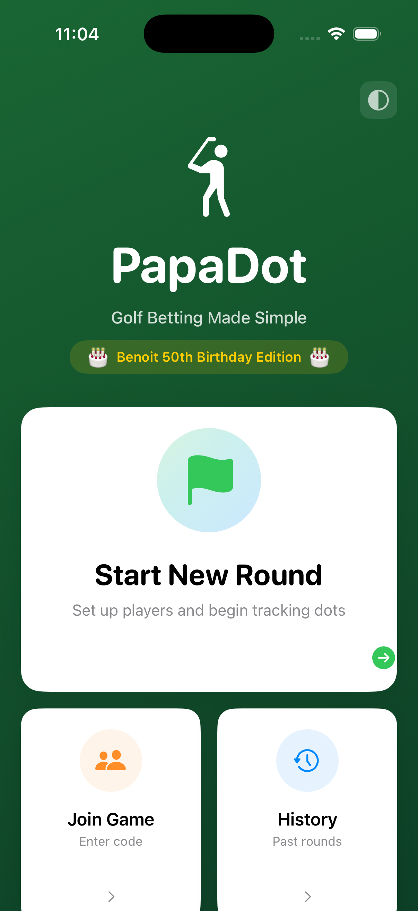
| Button | What it does |
|---|---|
| Start New Round | Opens the game-setup flow. Only the host uses this. |
| Join Game | Lets other players enter a code and join a game in progress. |
| History | Shows all completed rounds; tap any round to review or delete it. |
Starting a New Round
Tap Start New Round to open the setup screen. You'll configure the course, wager, players, and scoring rules before hitting Create.
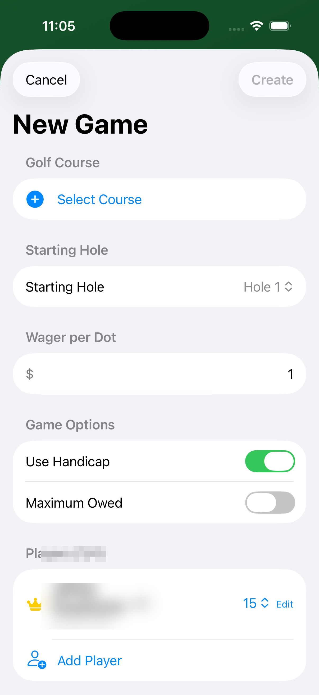
Selecting a Course
Tap Select Course. PapaDot uses your location to find nearby courses and ranks them by distance.
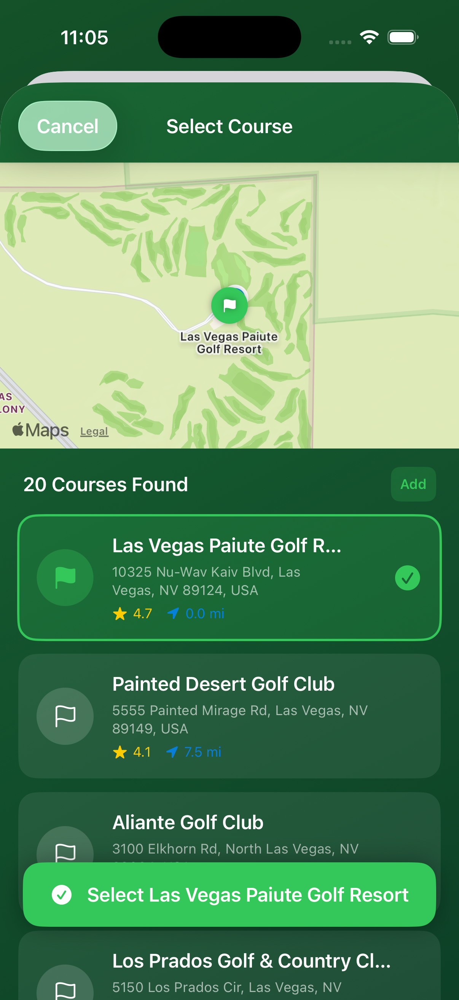
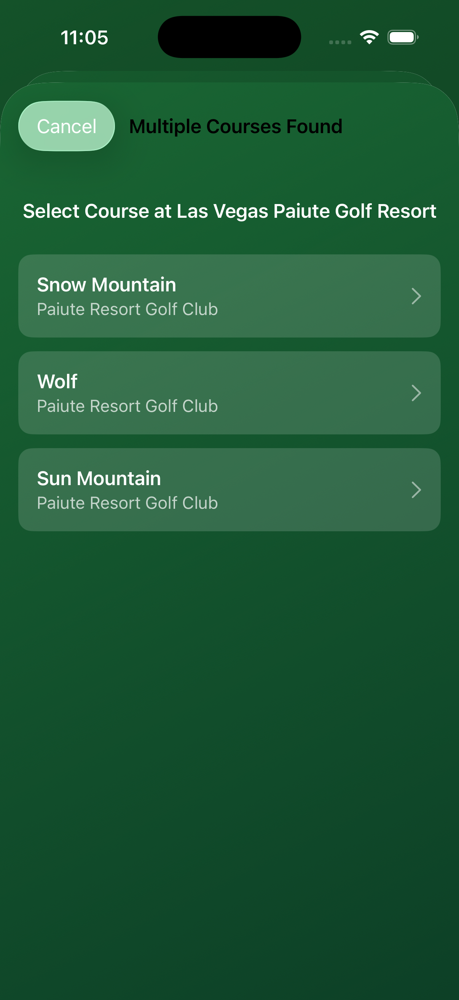
Tap the correct course and confirm. Course data provides par values per hole, which PapaDot uses for:
- Identifying Par-3 holes for Greenies
- Calculating Handicap strokes per hole (hardest → easiest)
Starting Hole
The starting hole defaults to Hole 1. Change it if your group is starting on the back nine or on a shotgun start.
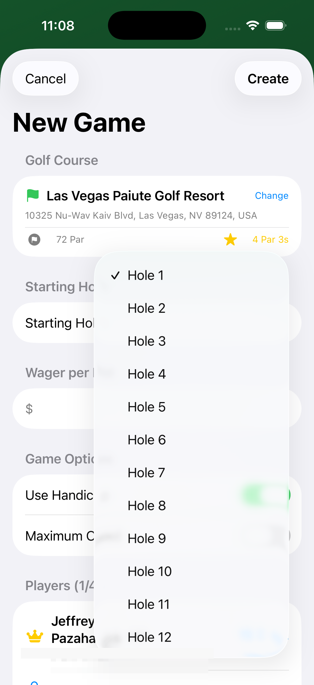
Wager per Dot
This is the dollar value of a single dot. The default is $1. Adjust up or down to suit your group — but remember, dots add up fast!
Game Options
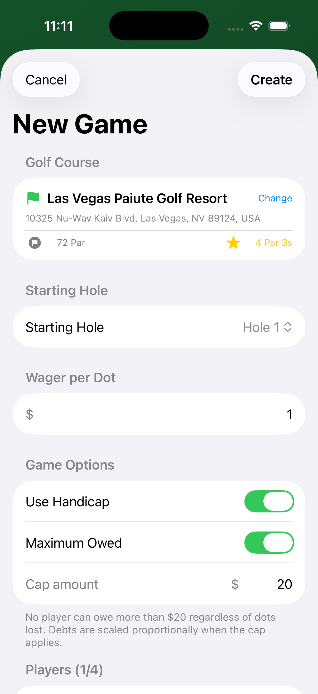
Use Handicap
When enabled, each player's handicap index is applied stroke-by-stroke across the 18 holes (hardest holes first). This allows players of different skill levels to compete more fairly for Low Hole wins.
For example, a player with HCP 15 receives one stroke on the 15 hardest holes. On those holes their gross score is reduced by 1 when calculating Low Hole.
Maximum Owed
When enabled, no player can owe more than the cap amount regardless of how many dots they lose. When the cap is hit, debts are scaled proportionally so the total owed never exceeds the cap.
Adding Players
The Players section shows who is in the round. The first time you use PapaDot, Player 1 is set to "Me" — tap it and link your own contact card; this is remembered for future rounds.
Tap Add Player to open the player picker. There are three tabs:
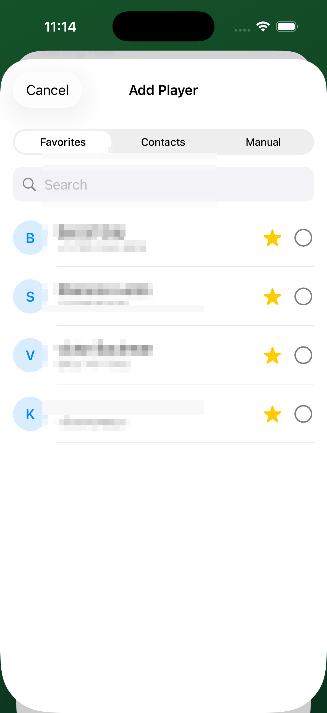
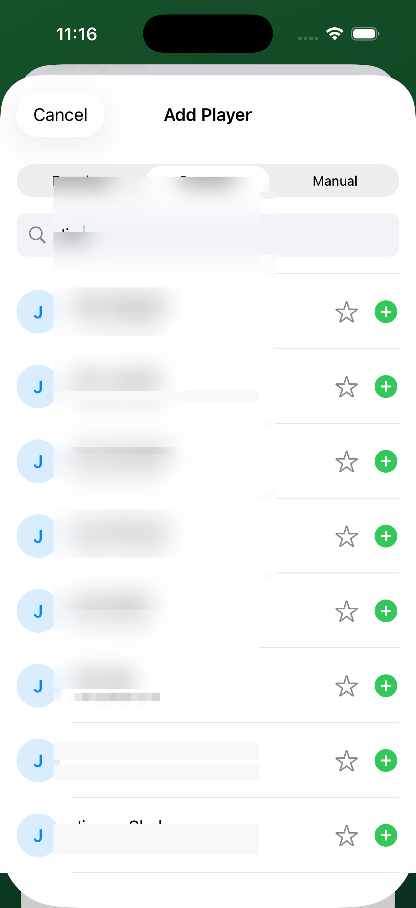
Favorites
Your most-used playing partners appear here for quick access. On first use this is empty — add players via Contacts first, then star them to make them Favorites.
Contacts
- Switch to the Contacts tab and type your buddy's name in the search box.
- Tap the ⭐ star icon to add them to Favorites for next time.
- Tap the + button to add them to the current round.
Manual
If someone isn't in your contacts, tap Manual and type their name directly.
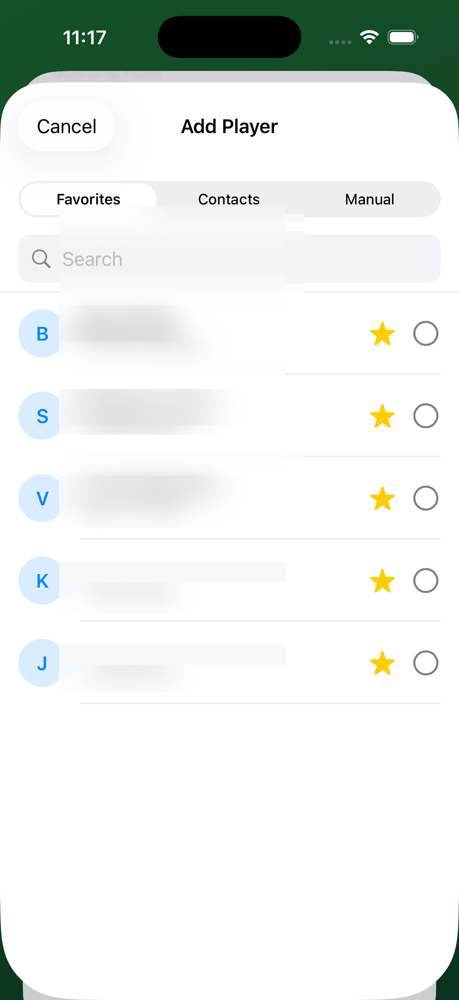
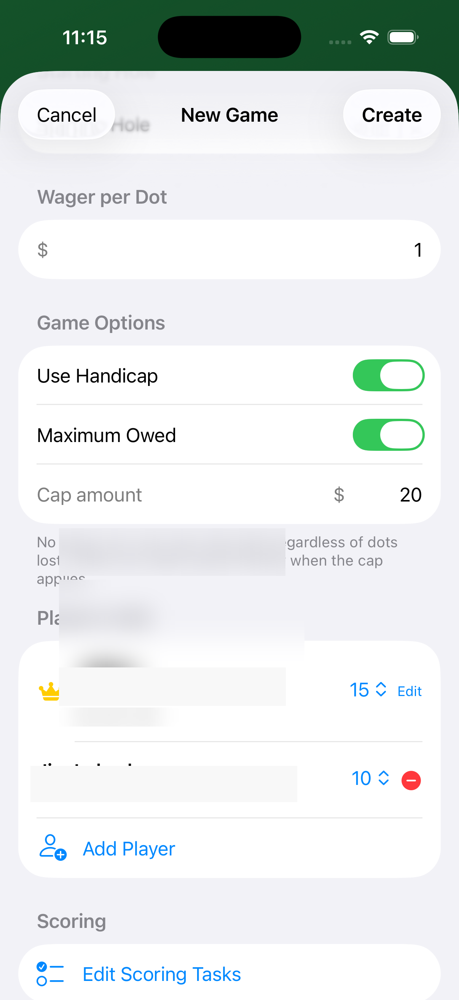
Adjusting Handicaps
After adding players, each row shows an HCP value with up/down stepper arrows. Set each player's handicap index here.
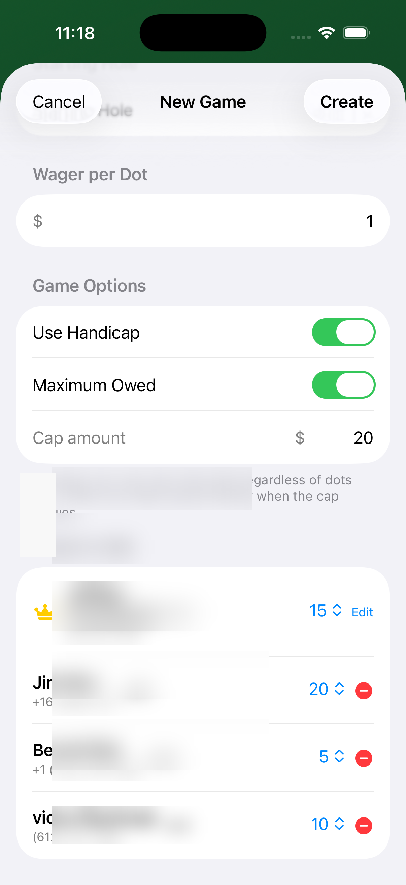
In this example:
- Jeffrey — HCP 15 (gets a stroke on the 15 hardest holes)
- Jim — HCP 20 (stroke on all 18 rated holes, plus the 2 easiest get 2 strokes)
- Benoit — HCP 5 (stroke only on the 5 hardest holes)
- Victor — HCP 10
These net scores are used only for Low Hole calculation — all other dots (Fairway, Birdie, Poley, etc.) use gross performance.
Scoring Tasks
Scoring tasks define what earns (or loses) dots on each hole. To view or edit them, tap Edit Scoring Tasks at the bottom of the New Game screen.
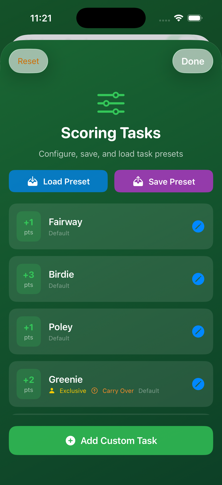
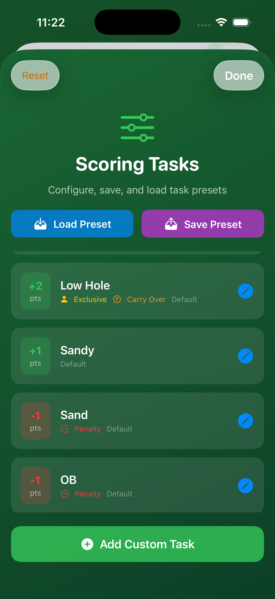
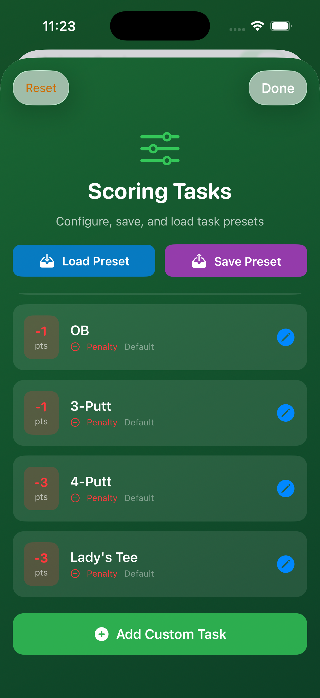
Default Tasks
| Task | Dots | Notes |
|---|---|---|
| 🌿 Fairway | +1 | Drives landing in the fairway |
| 🐦 Birdie | +3 | One under par |
| 📍 Poley | +1 | Holing a shot from outside the flagstick distance |
| 🏴 Greenie | +2 | Closest to pin on a Par 3 — Exclusive & Carry Over |
| 🏆 Low Hole | +2 | Lowest net score that hole — Exclusive & Carry Over |
| ⛱ Sandy | +1 | Making par or better after hitting a bunker |
| ⚠️ Sand | –1 | Penalty: landing in a bunker |
| ⚠️ OB | –1 | Penalty: out of bounds |
| ⚠️ 3-Putt | –1 | Penalty: three putts on a hole |
| ⚠️ 4-Putt | –3 | Penalty: four putts on a hole |
| ⚠️ Lady's Tee | –3 | Penalty: driving from the forward tees (opt-in per group) |
Exclusive means only one player can earn that dot per hole. Carry Over means if no one claims it, the dot value accumulates to the next hole.
Penalty dots (Sand, OB, 3-Putt etc.) are subtracted from the penalized player and added to all other players.
Saving & Loading Presets
Once you have scoring tasks configured to your liking, tap Save Preset to store the configuration under a name. Next round, tap Load Preset to restore it instantly.
Presets are useful when you play with different groups who have different preferences — for example, one group might want Low Hole worth only 1 dot with no sand penalties, while another wants a Long Drive bonus of 5 dots.
Creating the Game
Once everything is configured, tap Create in the top-right corner. PapaDot generates a unique join code for each non-host player.
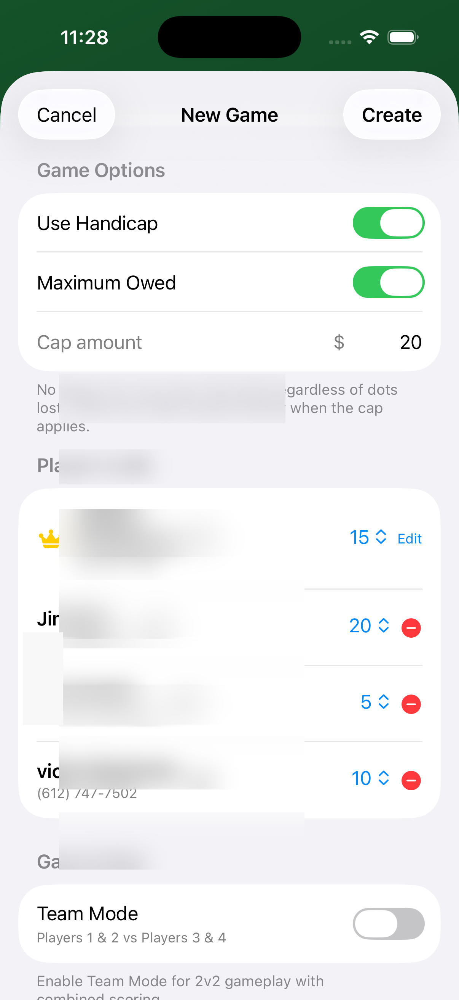
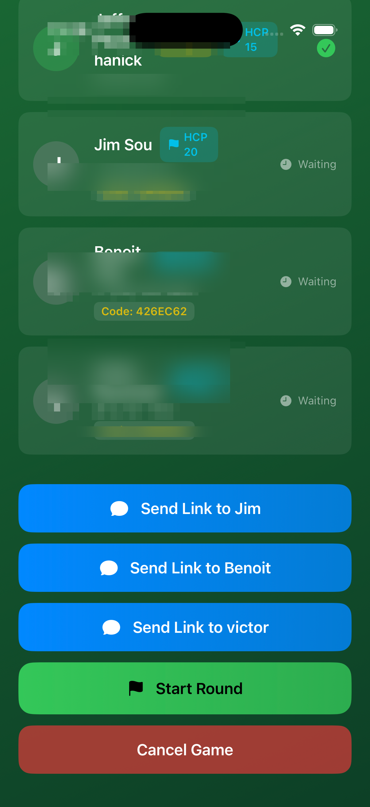
From the lobby screen you can:
- Tap Send Link to [Player] to send a join link via Messages
- Each player's unique code is shown (e.g.,
426EC61) for manual entry - When everyone has joined, tap Start Round
Joining as a Guest
Players who are not the host tap Join Game on the PapaDot home screen and enter the code they received.
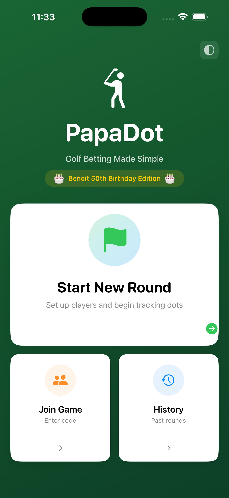
Waiting Room
After joining, guests land in the waiting room. It shows the course, fellow players, and their join status. The game begins as soon as the host taps Start Round.
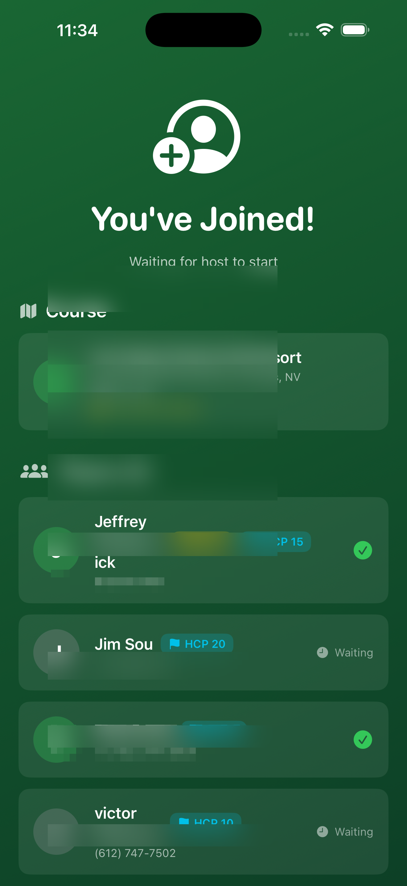
Scoring a Hole
The scoring screen appears at the start of each hole. Each row is a task; the columns are players.
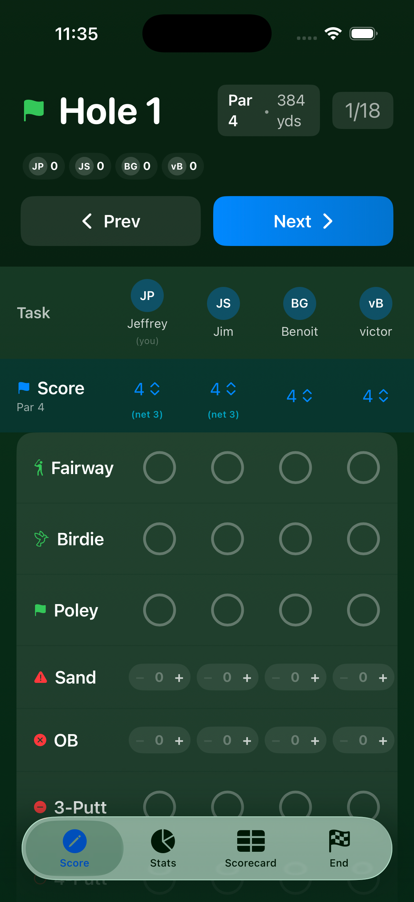
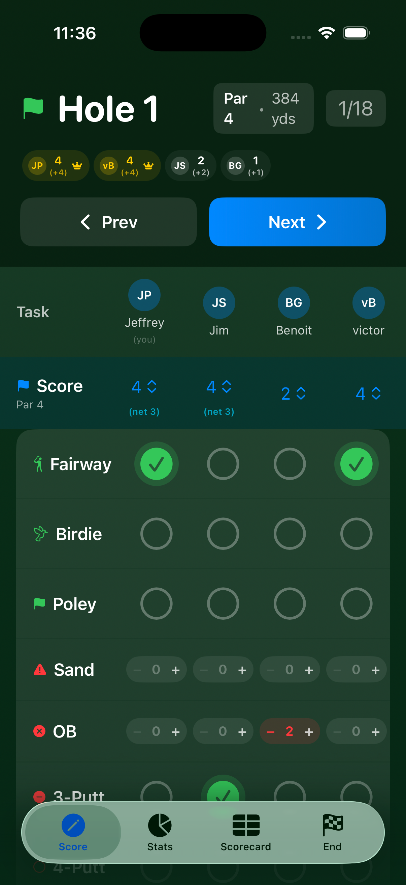
Tap the circle for any player who earned (or incurred) a task that hole. Filled circles = dot awarded; penalty tasks show a counter you increment instead.
The scoreboard at the top updates in real time showing:
- Total dots accumulated across the round
- Dots this hole (Low Hole is calculated when you tap Next)
Entering & Adjusting Scores
Before tapping Next, enter each player's gross score using the stepper in the Score row. This is required for Low Hole calculation — PapaDot applies handicap strokes automatically to determine the net winner.
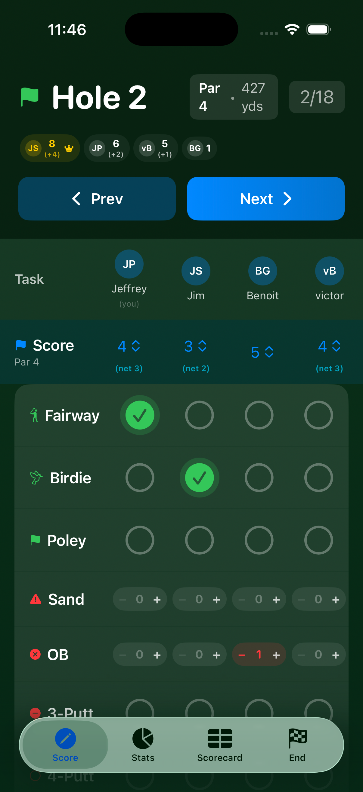
When you're satisfied, tap Next to advance to the next hole. You can tap Prev to go back and correct a mistake.
Stats Tab
At any point during the round, tap the Stats tab at the bottom of the screen to see a running breakdown of dots per task for each player.
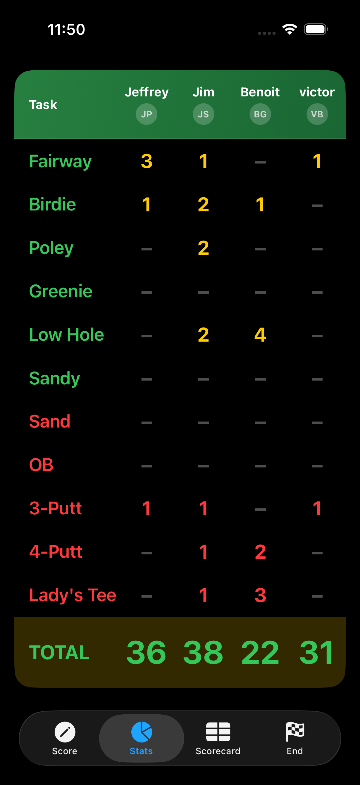
Finishing the Round
On Hole 18, the Next button changes to Finish. Tap it to end the round.
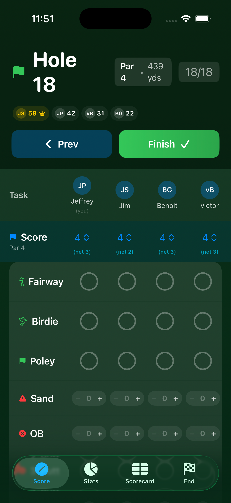
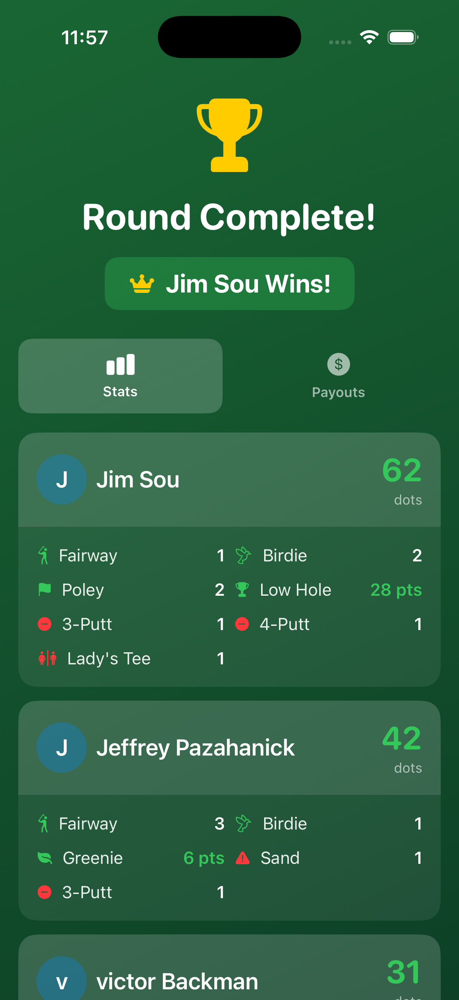
The Round Complete screen shows:
- The winner (most dots)
- Total dots per player
- Dot breakdown by task for each player
Payouts
Tap Payouts to see who owes whom and how much.
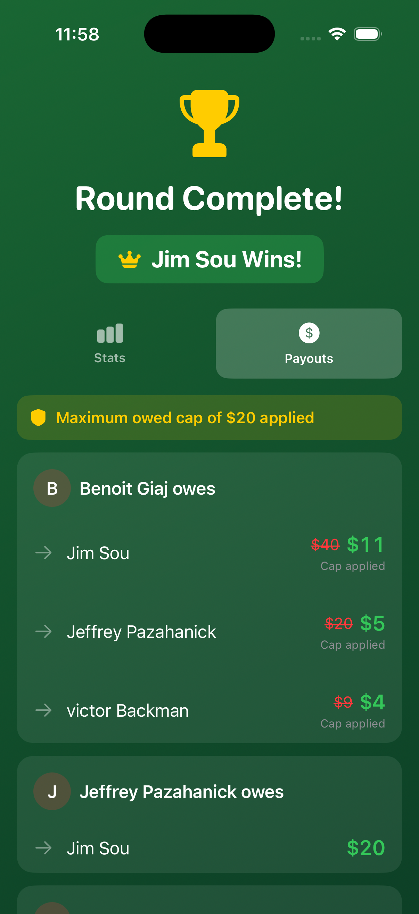
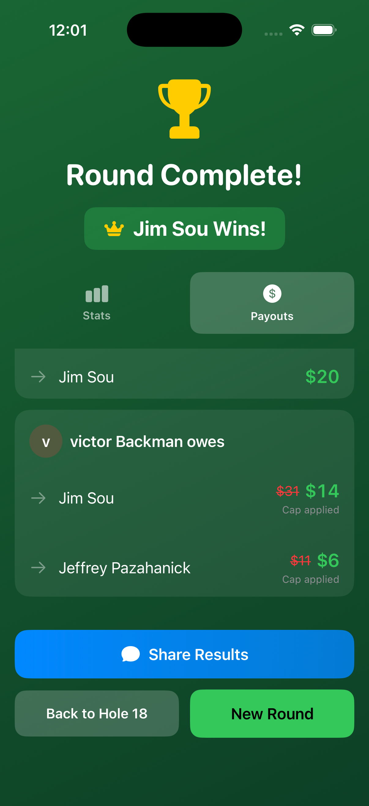
When the Maximum Owed cap is active, a yellow banner indicates it has been applied. Payouts are reduced proportionally — the player still loses in the same ratio relative to other losers, but the total is capped.
From the payouts screen you can:
- Share Results — sends a summary via Messages to all players
- Back to Hole 18 — return to scoring to correct any mistakes
- New Round — start fresh with the same or different players
History
From the home screen, tap History to browse all completed rounds. Each entry shows the course, date, players, and the winner. Tap a round to see its full stats and payouts. Swipe to delete rounds you no longer need.
Quick Reference
Default Dot Values
| Task | Dots | Type |
|---|---|---|
| Fairway | +1 | Standard |
| Birdie | +3 | Standard |
| Poley | +1 | Standard |
| Greenie (Par 3) | +2 | Exclusive, Carry Over |
| Low Hole | +2 | Exclusive, Carry Over |
| Sandy | +1 | Standard |
| Sand (penalty) | –1 to others | Penalty |
| OB (penalty) | –1 to others | Penalty |
| 3-Putt | –1 to others | Penalty |
| 4-Putt | –3 to others | Penalty |
| Lady's Tee | –3 to others | Penalty |
Key Concepts
| Term | Meaning |
|---|---|
| Dot | A scoring unit worth 1× the wager amount |
| Exclusive | Only one player can earn this dot per hole |
| Carry Over | If unclaimed, the dot value rolls to the next hole |
| Net Score | Gross score minus handicap strokes for that hole |
| Low Hole | Lowest net score on the hole wins the dot(s) |
| Preset | Saved scoring-task configuration for quick reuse |
| Maximum Owed | Cap on the total dollars one player can owe in a round |
Host vs. Guest
| Host | Guest | |
|---|---|---|
| Sets up the round | ✅ | ❌ |
| Enters dots & scores | ✅ | ❌ (view only) |
| Starts / ends round | ✅ | ❌ |
| Sees live scoring | ✅ | ✅ |
| Receives payouts summary | ✅ | ✅ (via Share) |